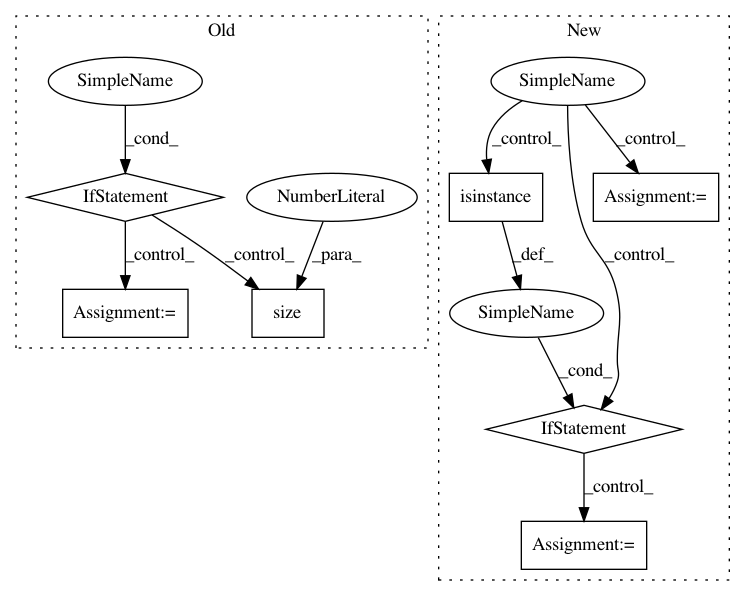

6b8b2026f4501c3d6b62031c79ee38dd64955e1f,torch_geometric/nn/conv/message_passing.py,MessagePassing,propagate,#MessagePassing#Any#Any#,43
Before Change
message_args = []
for arg in self.message_args:
if arg[-2:] == "_i":
tmp = kwargs[arg[:-2]]
if tmp is not None:
if size[i] is None:
size[i] = tmp.size(0)
tmp = torch.index_select(tmp, 0, edge_index[i])
message_args.append(tmp)
elif arg[-2:] == "_j":
tmp = kwargs[arg[:-2]]
if tmp is not None:
if size[j] is None:
size[j] = tmp.size(0)
tmp = torch.index_select(tmp, 0, edge_index[j])
message_args.append(tmp)
else:
message_args.append(kwargs[arg])
kwargs["size"] = size
update_args = [kwargs[arg] for arg in self.update_args]
out = self.message(*message_args)
After Change
if arg[-2:] in ij.keys():
tmp = kwargs[arg[:-2]]
if tmp is not None:
if not isinstance(tmp, tuple) and not isinstance(tmp, list):
tmp = (tmp, tmp)
assert len(tmp) == 2
idx = ij[arg[-2:]]
if size[idx] is None:
size[idx] = tmp[idx].size(0)
tmp = torch.index_select(tmp[idx], 0, edge_index[idx])
message_args.append(tmp)
In pattern: SUPERPATTERN
Frequency: 3
Non-data size: 7
Instances
Project Name: rusty1s/pytorch_geometric
Commit Name: 6b8b2026f4501c3d6b62031c79ee38dd64955e1f
Time: 2019-04-02
Author: kuynzereb@gmail.com
File Name: torch_geometric/nn/conv/message_passing.py
Class Name: MessagePassing
Method Name: propagate
Project Name: rusty1s/pytorch_geometric
Commit Name: 135ed9e57eedd1af12caf27fe0b1d6d26754ce07
Time: 2020-06-16
Author: matthias.fey@tu-dortmund.de
File Name: torch_geometric/nn/conv/ppf_conv.py
Class Name: PPFConv
Method Name: forward
Project Name: rusty1s/pytorch_geometric
Commit Name: a8ad5f0067eee2ec1dfd353d8c97f7c926b05dad
Time: 2020-06-30
Author: matthias.fey@tu-dortmund.de
File Name: torch_geometric/nn/conv/sg_conv.py
Class Name: SGConv
Method Name: forward